精密零件
按图进行 CNC 机加工，确认材料与公差要求。
从精密零件、结构制造到设备装配，按项目需求统筹各项制造工作。
按图进行 CNC 机加工，确认材料与公差要求。
钣金、焊接结构与设备防护结构。
依据项目接口要求，进行机械集成与装配。
依据确认的图纸与工艺，安排后续批次生产。
根据零件形状、公差、数量和交付要求，选择数控车削与加工中心产能。
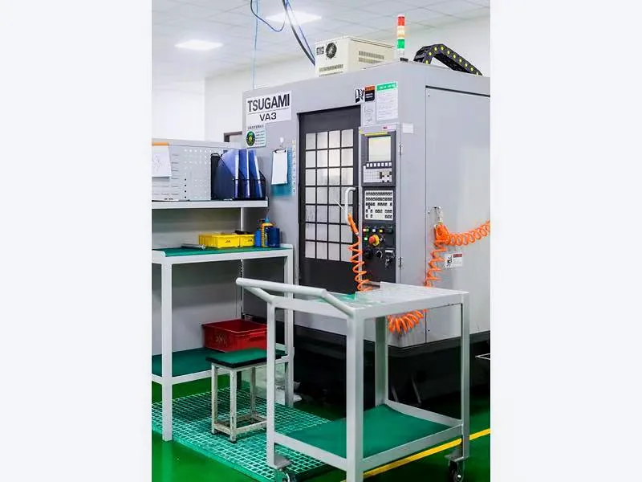
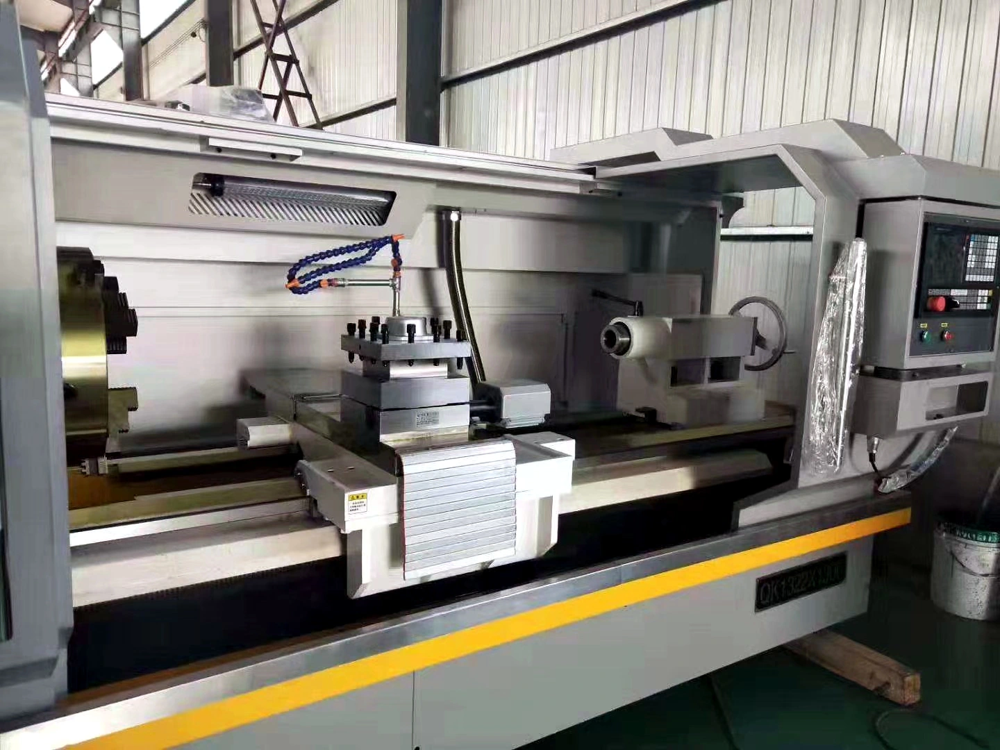
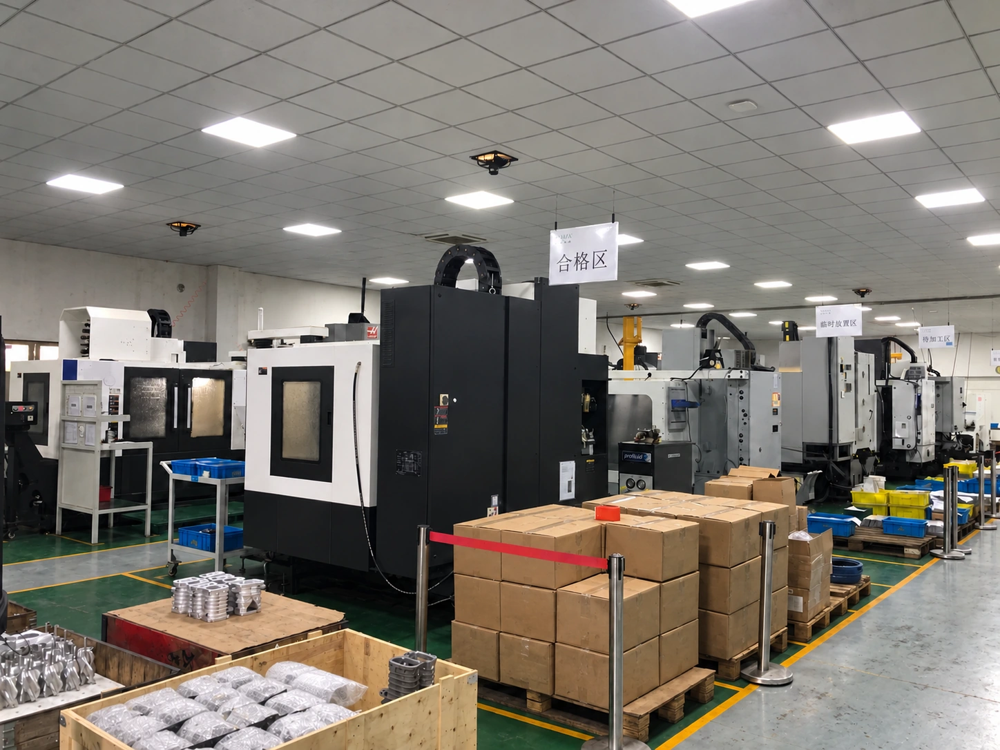
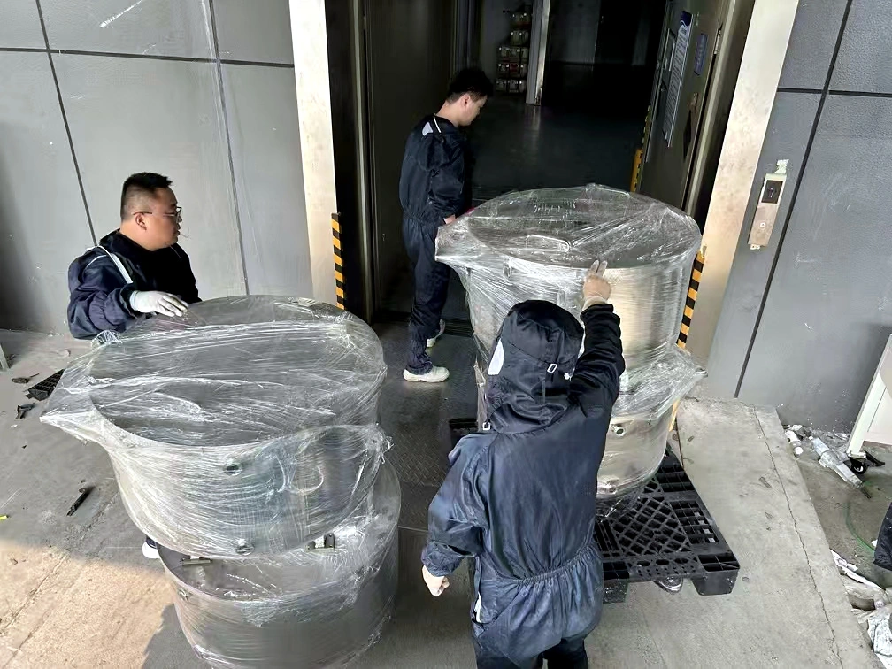
从车间制造到设备包装，再到协调出口交付，形成完整的项目链条。
展示稳定批量、检测与设备集成的真实项目场景。
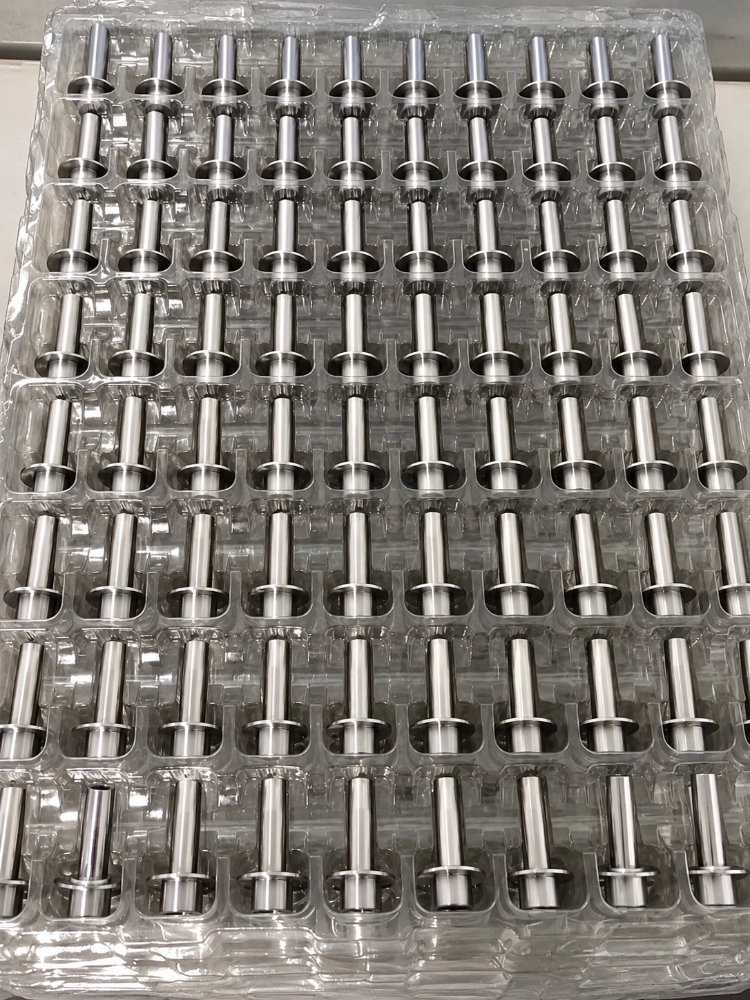
依据确认的图纸与工艺组织重复批次，并配合检测与后续供货安排。
可采用高精度三坐标测量（CMM），配合其他检验与测试设备，按图纸和项目要求进行尺寸检测。
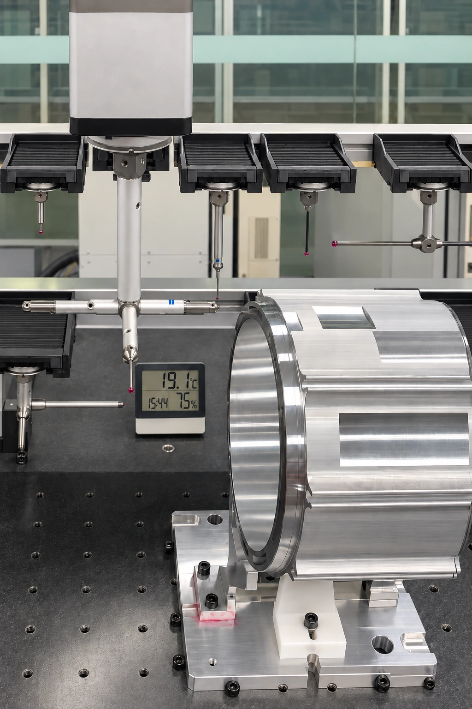
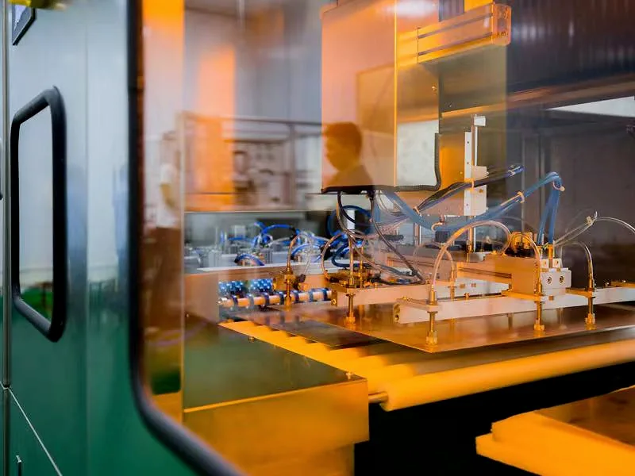
将气动执行、定位夹具与机械接口集成于专用自动化工位。
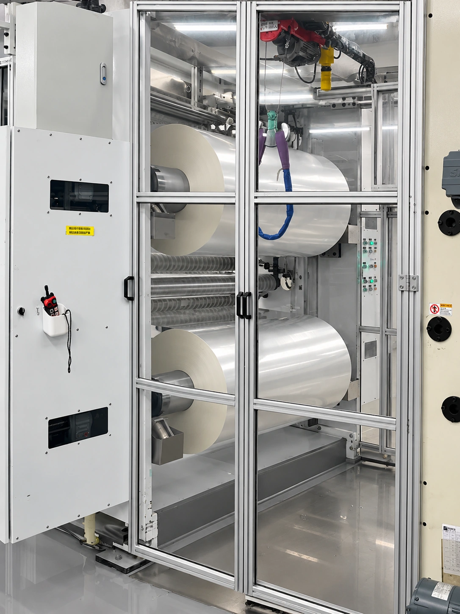
围绕应用要求与约定接口，协调设备制造、机械集成与装配。
通过设备测试、科研装置、工艺设备与大型安装现场，说明具体工作与项目范围。

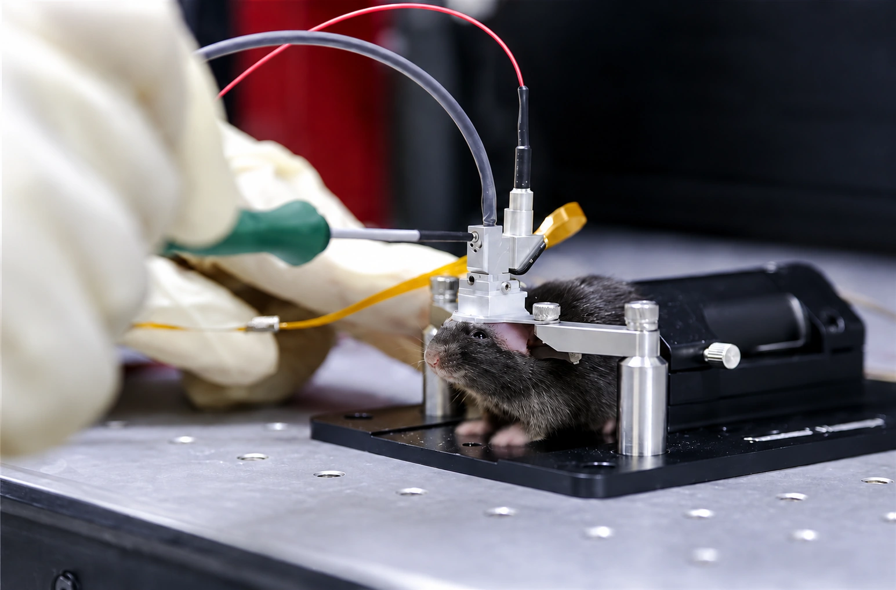


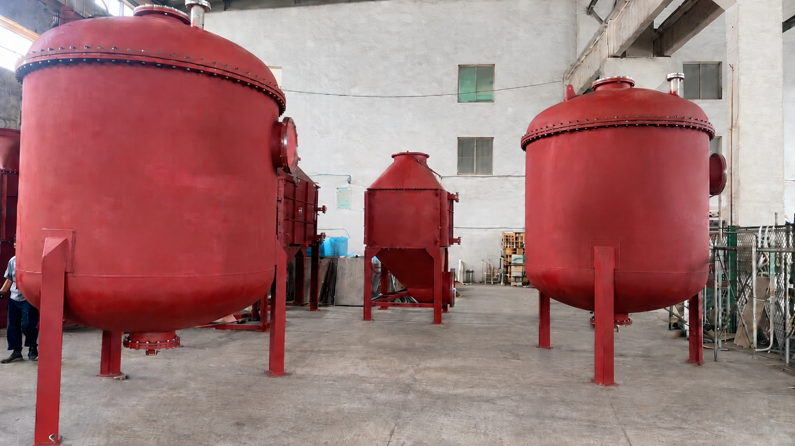
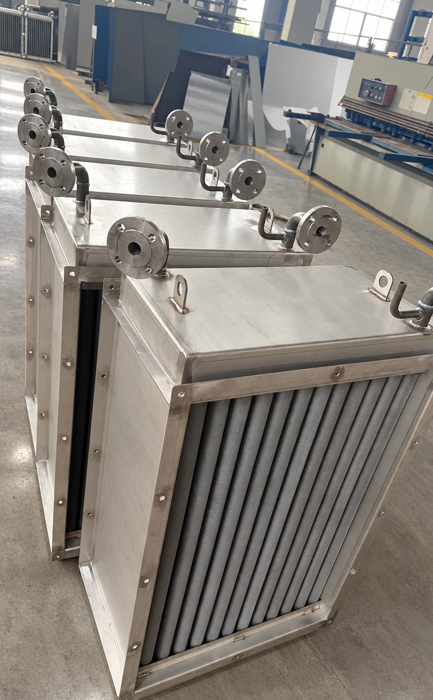
按项目要求协调大型设备的结构制造、焊接与机械装配。
我们会审核图纸如何真正制造，提前讨论成本与工艺取舍，并协调生产、检测和交付。需要其他工艺或产能时，SZATech 仍作为客户的统一协调窗口，持续推进项目直至交付。
若已有完整图纸，可直接审核并制造；若只有样件、草图或不完整图纸，只要具备可评估的基本工程定义，也可以讨论补充可制造细节。
对适合的项目，在图纸和工艺确认后进入稳定的重复生产。
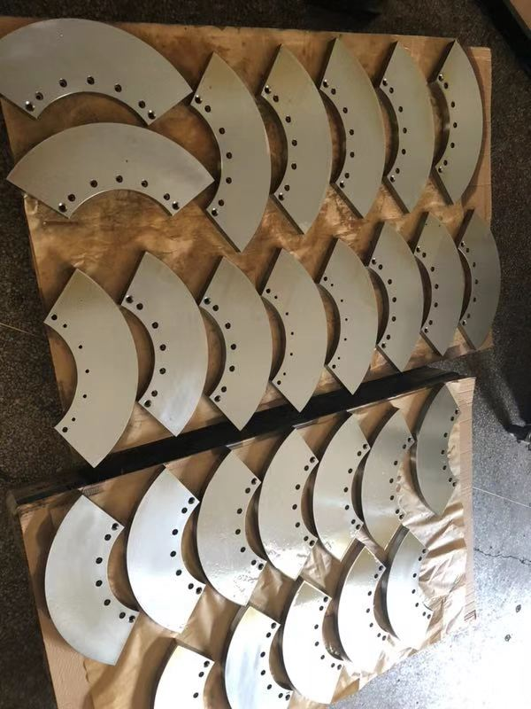
STEP 或 PDF 是最好的起点。说明需要制造的内容；材料、数量、公差、用途、配合接口、目标交期和目标价格有助于我们高效评估。
如果只有样件、草图或不完整图纸，也可以先讨论是否具备规划制造工作的足够信息。